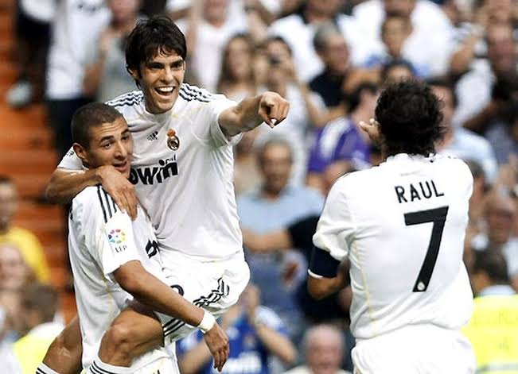

A pesar de estos obstáculos, Kaká dejó momentos de gran calidad. Su visión de juego, elegancia para conducir el balón y capacidad para asistir siguieron siendo fundamentales cuando estaba en condiciones físicas óptimas. Anotó goles importantes y participó en numerosas jugadas decisivas, demostrando siempre su profesionalismo y compromiso con el equipo.

Mejores momentos de Kaká en el Madrid.